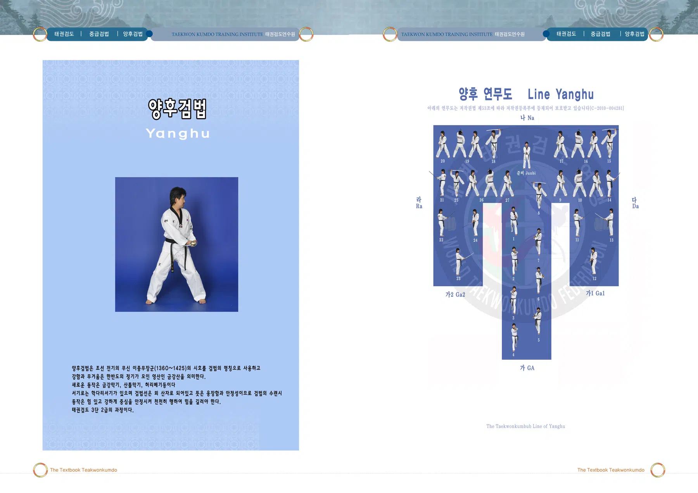
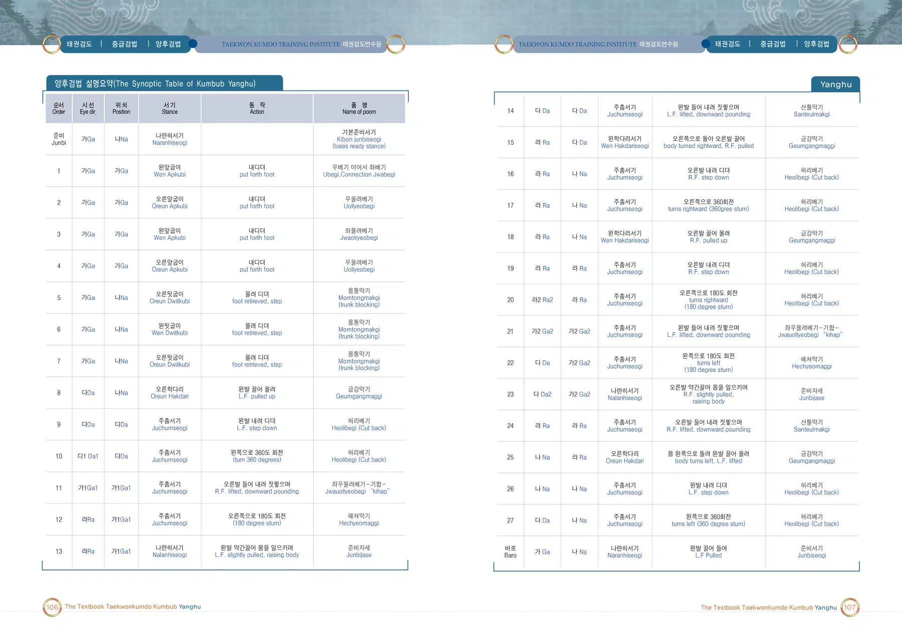
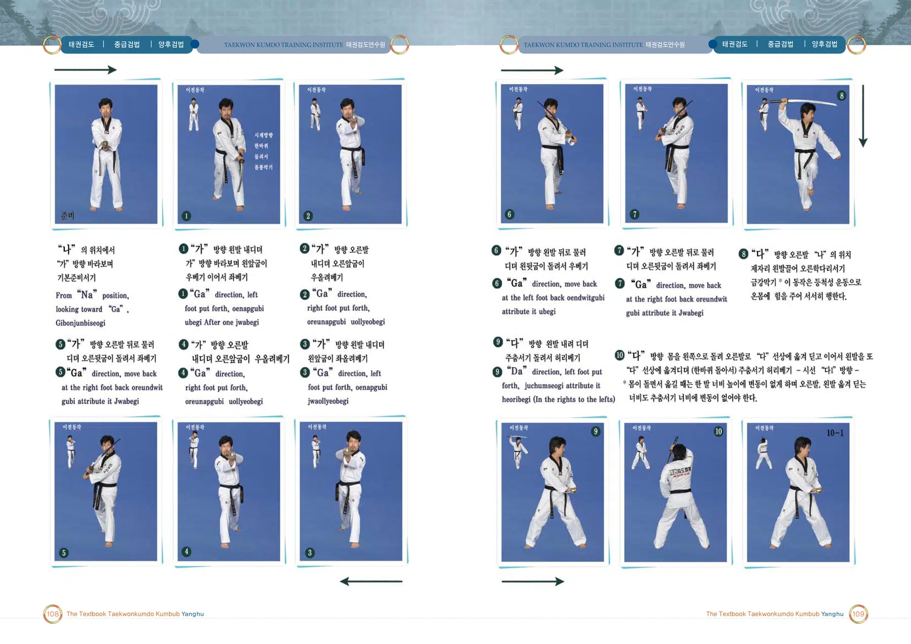
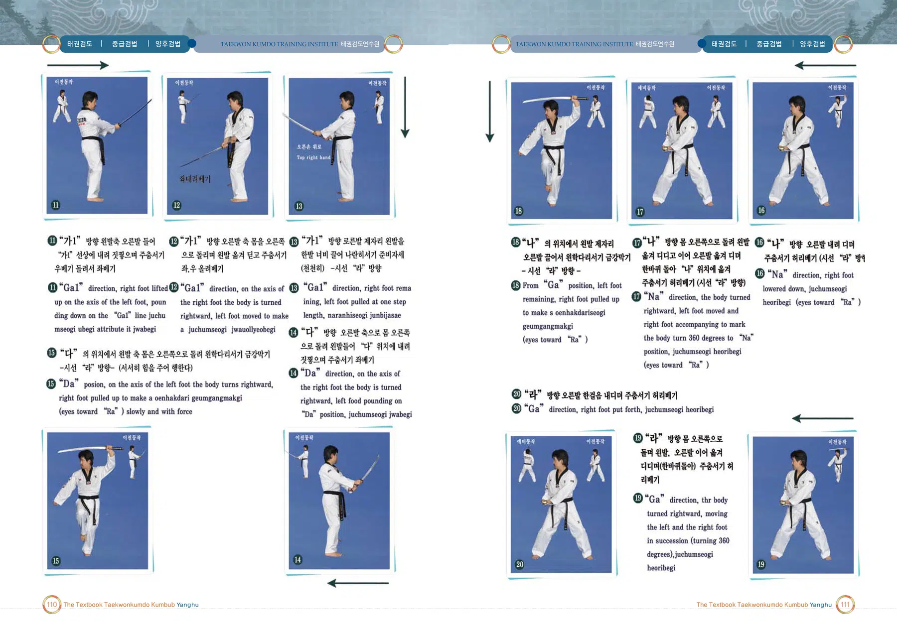
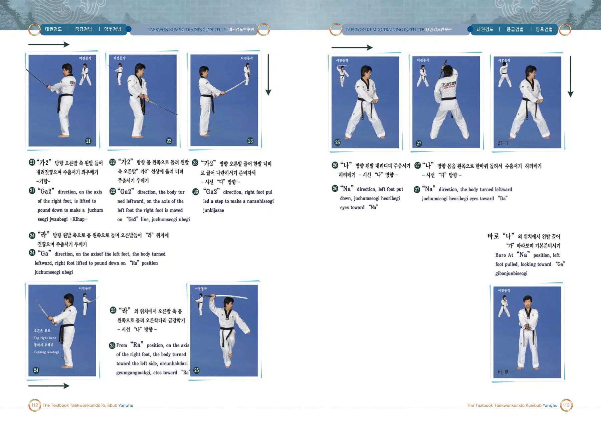

양후검법
이종무 장군의 시호에서 이름을 따온 검법
출처: 태권검도 교본. 아래 설명은 제공된 초안의 뜻풀이 요약이며, 원문은 교본 이미지에서 확인할 수 있습니다.
양후검법의 뜻과 상징
조선 전기의 무신 이종무 장군의 시호를 명칭으로 사용한다. 금강산의 웅장함과 안정성을 상징하며 중심을 굳게 유지하는 검법이다.
태권검도 교본 인쇄 228쪽의 설명을 바탕으로 요약한 해설입니다.
양후검법 표준 정의
양후검법은(는) 세계태권검도연맹의 태권검도 역사 인물 검법 교육체계에 속하는 검법이다. 조선 전기의 무신 이종무 장군의 시호를 명칭으로 사용한다. 금강산의 웅장함과 안정성을 상징하며 중심을 굳게 유지하는 검법이다.
검법 체계 창시자: 전성권 · 출처: 태권검도 교본 228쪽 · 교육체계: 역사 인물 검법 9종
양후검법 교본 자료
이미지를 누르면 확대됩니다. 확대 화면에서는 좌우로 이동하여 동작과 설명을 확인하세요.




